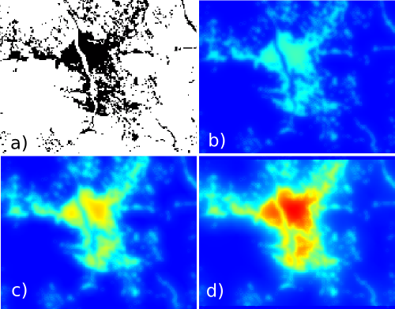

DESCRIPTION
Module r.futures.devpressure is part of FUTURES,
land change model.
It computes development pressure, a predictor based on the number of neighboring
developed cells within search distance, weighted by distance.
The development pressure variable plays a special role in the model,
allowing for a feedback between predicted change and change in subsequent steps.
There are multiple options for calculating development pressure in the model.
- occurrence: simple count of the number of developed
cells within the specified window size
- gravity: defined as scaling_factor / pow(distance, gamma)
- kernel: defined as scaling_factor * exp(-2 * distance / gamma)
Coefficient gamma is the coefficient controlling the influence of distance.
The best value for gamma is chosen during the model selection process (TODO).
The input raster is binary, value 1 represents development, value 0 no development.
The neighborhood size describes the size of the moving
window in cells (2 * size + 1).

Figure: Effect of parameters size and gamma:
a) initial development,
b) gamma = 2, size = 10,
c) gamma = 1.5, size = 10,
d) gamma = 1.5, size = 20.
NOTES
By default NULL values are propagated.
This means that the edges of the resulting map will be NULLs. To avoid that,
flag n internally enlarges the computational region,
converts NULLs to zeros, performs the computation
and then patches back the original NULL values.
Module r.futures.devpressure, although written for FUTURES model,
is general enough to be used for different applications where distance pressure
can be described with the functions above.
EXAMPLES
r.futures.devpressure input=developed output=pressure gamma=1.5 size=10 method=gravity
SEE ALSO
FUTURES,
r.futures.pga,
r.futures.calib,
r.futures.demand,
r.sample.category
REFERENCES
-
Meentemeyer, R. K., Tang, W., Dorning, M. A., Vogler, J. B., Cunniffe, N. J., & Shoemaker, D. A. (2013).
FUTURES: Multilevel Simulations of Emerging
Urban-Rural Landscape Structure Using a Stochastic Patch-Growing Algorithm.
Annals of the Association of American Geographers, 103(4), 785-807.
DOI: 10.1080/00045608.2012.707591
- Dorning, M. A., Koch, J., Shoemaker, D. A., & Meentemeyer, R. K. (2015).
Simulating urbanization scenarios reveals
tradeoffs between conservation planning strategies.
Landscape and Urban Planning, 136, 28-39.
DOI: 10.1016/j.landurbplan.2014.11.011
- Petrasova, A., Petras, V., Van Berkel, D., Harmon, B. A., Mitasova, H., & Meentemeyer, R. K. (2016).
Open Source Approach to Urban Growth Simulation.
Int. Arch. Photogramm. Remote Sens. Spatial Inf. Sci., XLI-B7, 953-959.
DOI: 10.5194/isprsarchives-XLI-B7-953-2016
AUTHOR
Anna Petrasova, NCSU GeoForAll